Archivo de Sujetos de Interés (Héroes)
Leon S. Kennedy
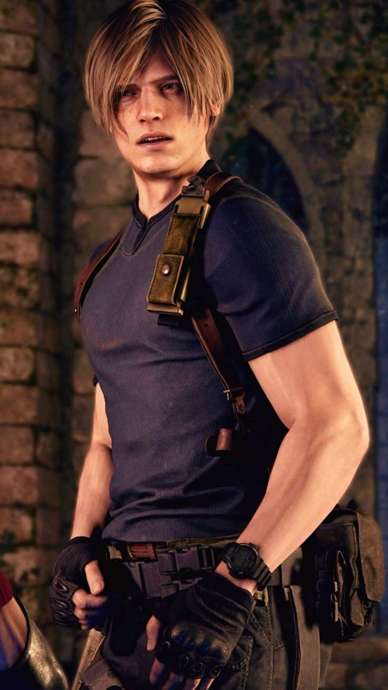
Descripción: Agente Federal y ex-oficial del R.P.D.
Biografía: Su primer día como policía en Raccoon City se convirtió en una pesadilla. Tras sobrevivir al brote, fue reclutado por el gobierno de EE.UU., convirtiéndose en un agente de élite experto en misiones contra el bioterrorismo a nivel mundial.
Jill Valentine
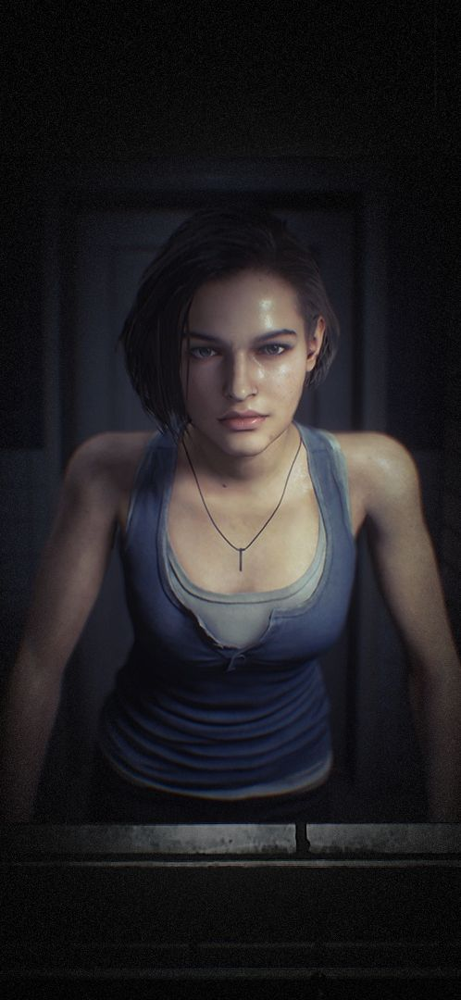
Descripción: Especialista en desactivación de S.T.A.R.S.
Biografía: Una de las pocas supervivientes del incidente de la Mansión Spencer. Posee una gran capacidad de resistencia y entrenamiento táctico. Es miembro fundador de la B.S.A.A., dedicada a la destrucción de armas biológicas.
Chris Redfield
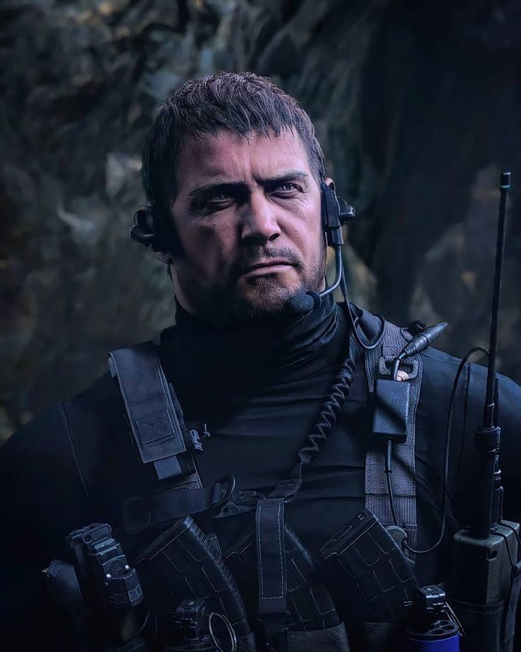
Descripción: Líder táctico y ex-piloto de la Fuerza Aérea.
Biografía: Hermano de Claire y antiguo miembro del equipo Alpha de S.T.A.R.S. Chris ha dedicado su vida a perseguir a Umbrella y a su archienemigo Albert Wesker, liderando operaciones en todo el mundo.
Claire Redfield
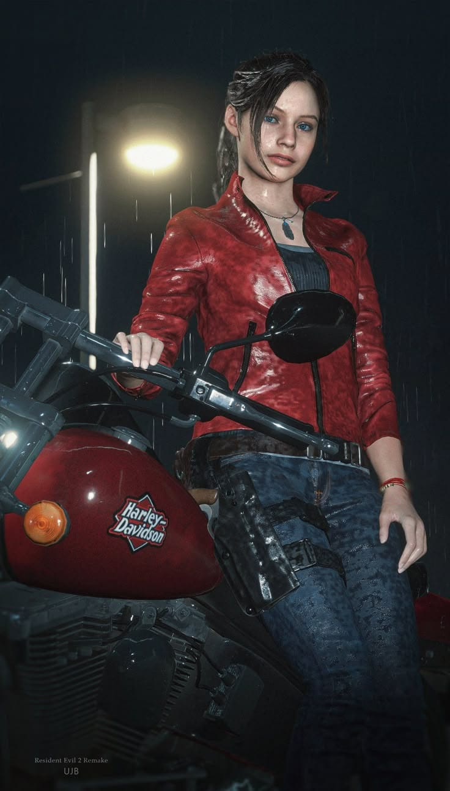
Descripción: Activista de TerraSave y superviviente.
Biografía: Llegó a Raccoon City buscando a su hermano Chris. Tras el incidente, se unió a la organización TerraSave para ayudar a las víctimas de ataques biológicos, demostrando que no se necesita ser militar para ser una heroína.
Ada Wong
Descripción: Espía internacional independiente y experta en recuperación de bio-muestras.
Biografía: Una de las figuras más enigmáticas del mundo del bioterrorismo. Aunque se presenta como una agente enviada para recuperar muestras de virus (como el Virus-G o Las Plagas), sus verdaderas intenciones y para quién trabaja realmente siguen siendo un misterio. Ha cruzado caminos repetidamente con Leon S. Kennedy, operando siempre desde las sombras con una eficacia letal y tecnología de infiltración avanzada.
Ethan Winters
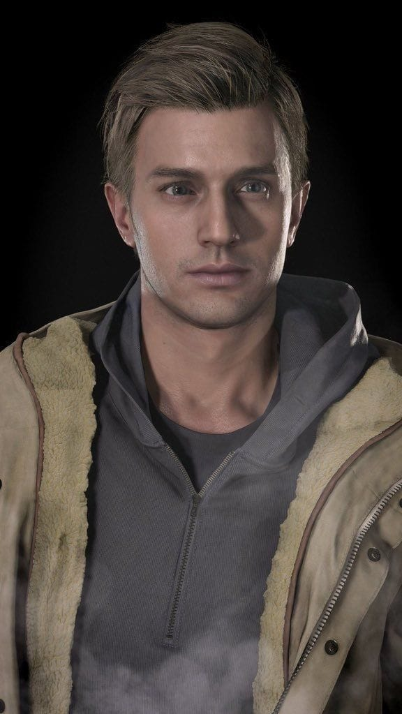
Descripción: Civil superviviente del Incidente Baker / Sujeto de mutación regenerativa.
Biografía: Ethan era un ingeniero de sistemas cuya vida cambió radicalmente al buscar a su esposa desaparecida en una plantación de Luisiana. Tras ser infectado por la "Eveline" (Serie-E), desarrolló capacidades regenerativas asombrosas que le permitieron sobrevivir a mutilaciones extremas. Su historia culmina en Europa, donde sacrificó su vida para proteger a su familia y detener la amenaza del Megamiceto.
Grace Ashcroft
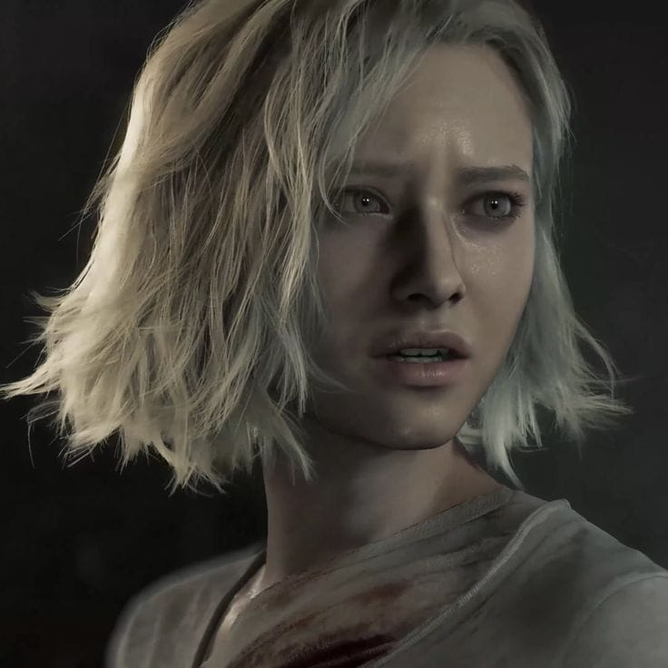
Descripción: Sujeto civil y única superviviente del Incidente de la Isla Sonidre.
Biografía: Grace es una figura trágica cuyos registros se encuentran en los archivos de audio "Prelude to the Abyss". Tras perder a su familia en un "accidente" biológico orquestado en una isla remota, se convirtió en un testigo clave de los efectos psicológicos del aislamiento y el terror. A diferencia de los agentes entrenados, su historia representa el impacto devastador de las bioarmas en la población civil desarmada.
Amenazas Biológicas Identificadas (Villanos)
Albert Wesker
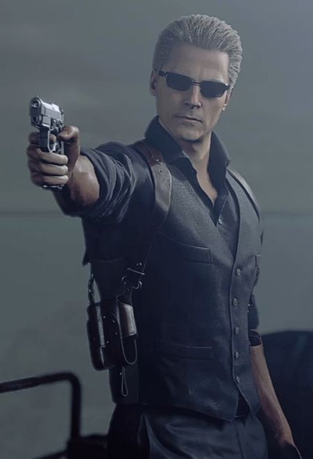
Descripción: Antiguo capitán de S.T.A.R.S. y traidor.
Biografía: Mente maestra con capacidades sobrehumanas gracias a un virus experimental. Wesker operó desde las sombras para Umbrella antes de traicionarlos para cumplir su propio plan de evolución humana forzada.
Osmund Saddler
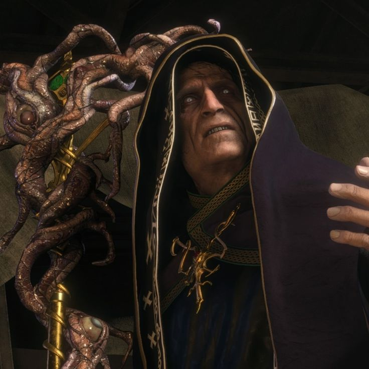
Descripción: Líder del culto de "Los Iluminados".
Biografía: Utilizó el parásito Las Plagas para controlar a una comunidad entera en España. Su objetivo era propagar el parásito por todo el mundo para dominar a la humanidad bajo su voluntad religiosa.
Nemesis (T-02)
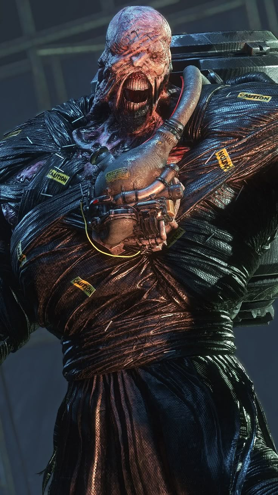
Descripción: Bioarma inteligente de persecución.
Biografía: Una de las creaciones más letales de Umbrella. Fue programado con una única misión: cazar y eliminar a todos los miembros de S.T.A.R.S. que sobrevivieron al incidente de la mansión.
Tyrant (T-002)
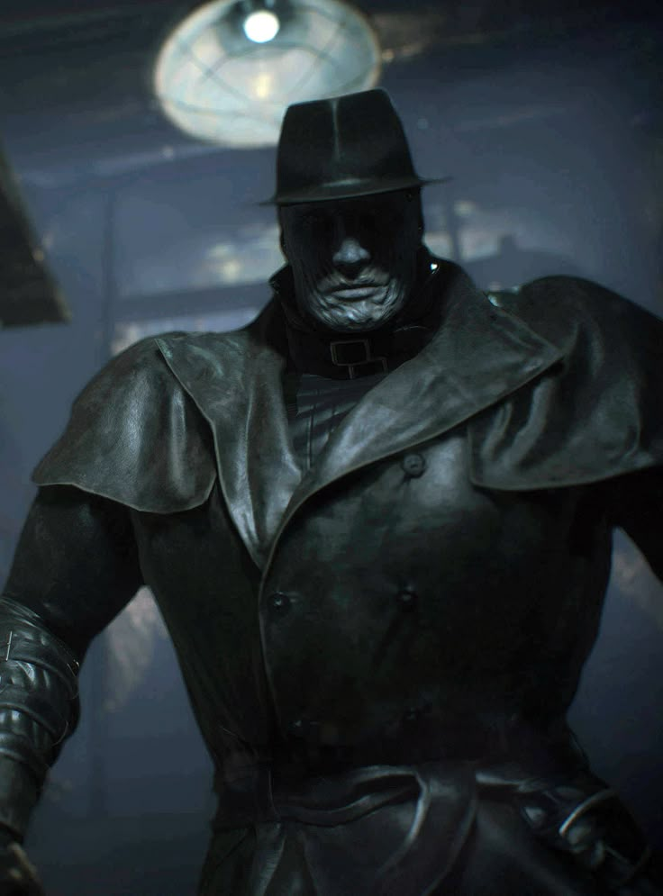
Descripción: El arma biológica definitiva de Arklay.
Biografía: Un prototipo de combate masivo desarrollado en los laboratorios de la montaña Arklay. Fue el primer gran éxito de Umbrella en la creación de soldados biológicos de fuerza extrema.
Registro de Agentes Patógenos
Virus-T
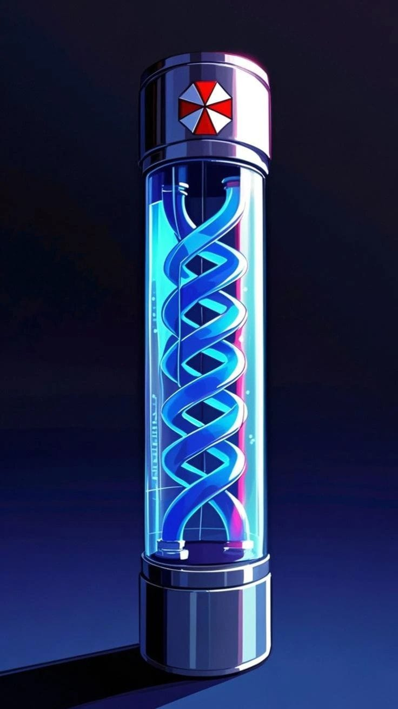
Descripción: Mutágeno viral de reanimación celular.
Biografía: El virus responsable del brote de Raccoon City. Provoca necrosis y la pérdida de funciones cerebrales superiores, convirtiendo a los humanos en muertos vivientes con un hambre insaciable.
Virus-G
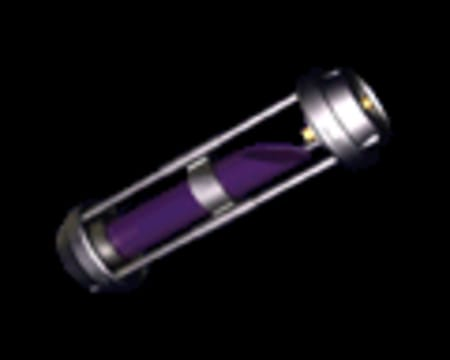
Descripción: El virus de la mutación evolutiva.
Biografía: Creado por William Birkin, este virus permite una mutación descontrolada y constante. A diferencia del Virus-T, el huésped infectado busca reproducirse infectando a otros parientes genéticos.
Las Plagas
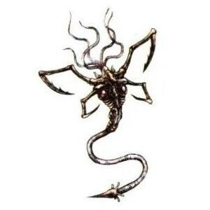
Descripción: Organismo parasitario de control mental.
Biografía: Un parásito antiguo que se aloja en el sistema nervioso. Permite que los infectados mantengan su inteligencia y habilidades motoras, pero bajo el mando absoluto de un "líder".